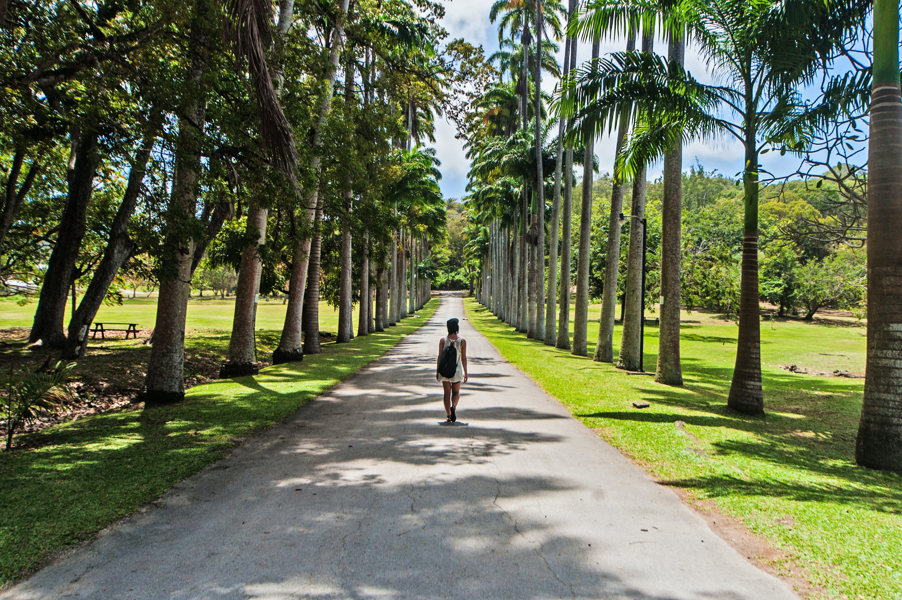
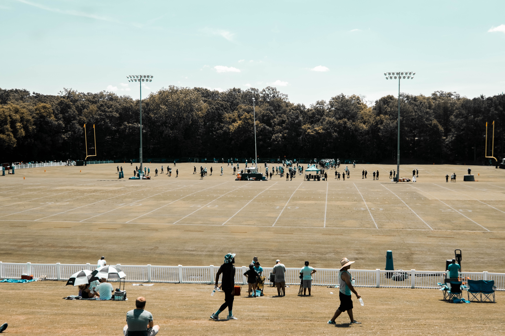

In terms of infrastructure, Coding School is one of the best colleges in the country matching
international standards. It is one of the few colleges in the University of Delhi which has upgraded
its classrooms to facilitate teaching through modern tools and techniques. The
College has centrally air conditioned classrooms with Wi-Fi enabled LCD projectors,
tutorial rooms, library, a state-of-the-art seminar room and a fully equipped
auditorium with seating capacity of over 750 persons. The College takes pride in being a
differently-abled friendly campus with new ramps, lifts and special washrooms added to the
building. Also, the College has various facilities to address the reading, hearing and understanding
requirements of various students. The SRCC library is an empowering unit with a Resource Centre for
Visually Challenged possessing an array of audio-visual aids to assist in the process of self
actualization. The College is endowed with renovated hostels, medical support systems
(along with physiotherapy centre), modern gymnasium, swimming pool, a huge parking
facility (available to both students and faculty), air conditioned sports complex and playground
of international standards. A complete smoke and vehicle free zone, the College provides an
eco-friendly environment to its students with the latest initiatives of solar heating,
rainwater harvesting, paper recycling and other green initiatives. The College has taken
measures to address the need for vigilance and security. The campus is CCTV-enabled to cater to the safety
requirements of a well endowed and equipped campus receiving a huge footfall.

The Library subscribes to over eighty journals of national and international repute. Some of the prominent journals being subscribed to by the Library include Accountancy, Accounting Review, American Economic Review; Centre for Monitoring Indian Economy, Chartered Accountant, Economic and Political Weekly, Economist, Harvard Business Review, Journal of Accountancy, Journal of Business, Journal of Economic Literature, Journal of Economic Perspectives, Journal of Finance, Organizational Dynamics, Vikalpa, Reserve Bank of India Bulletin, Seminar, Vision, Yojana, Down to Earth amongst others.
Like Shri Ram College of Commerce, its infrastructure has a vivid history, reflective of its growth and evolution as an institution. In its early days when the College was still known as the Commercial College (till 1951), the institution functioned from a hired bungalow situated at 8, Darya Ganj, New Delhi.
In 1949, The Delhi Improvement Trust allotted land for the construction of the college building in North Campus. Spread over sixteen acres of land, the now iconic brick red and white structure was conceived by architect Shri G. C. Sharma. The construction of the College began in the following year, in 1950, with the construction of six staff quarters. This was followed by the commencement of construction of the Main College Building as a single structure in 1951. The construction was completed in 1954, and on January 31 of the same year, Dr. S. Radhakrishnan, the then Vice- President of India, inaugurated the distinctive Main Building, beginning a new era in the annals of the Institution.

Attached to the main academic block, the SRCC Library is a two storey centrally air-conditioned and Wi-Fi enabled unit with seating capacity for about 300 readers divided between two floors. The SRCC library employs the latest technology in library sciences to provide the best learning environment to its users. Well-stocked and presently having a collection of over eighty thousand volumes on different subjects, latest publications in the fields of business, economics, humanities and social sciences are continuously added to the collection to equip students with a wide range of academic. The College Library is fully automated and provides user services through computer.
All prominent national dailies are also subscribed in the library. Magazines such as Business India, Business Today, Business World, Competition Master, Competition Success Review, Capital Market, Dalal Street, Frontline, India Today, Mainstream, Outlook, PC Quest, Reader’s Digest, Span and Times amongst others are also subscribed in the library.
The SRCC Library also houses the SRCC Enabling Unit. There is a unique Resource Center for Visually Impaired Students (RCVC) developed under the SRCC Enabling Unit. The resource center has a variety of assistive technology tools, hardware equipment and software, like JAWS and Supernova, the screen-reading softwares; Kurzweil, the OCR; Clear Reader, the instant-reading hardware equipment; clear-view the magnifier attached with LCD; DUXBURY Braille translator; scanning and embossed printing devices to facilitate students with different degrees of visual impairment.
The first floor of the College Library also houses the SRCC Archival Unit which chronicles the history and important events of the College.